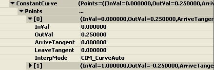
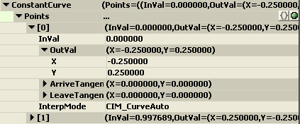
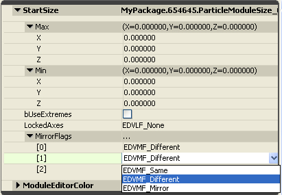

UDN
Search public documentation:
DistributionsKR
English Translation
日本語訳
中国翻译
Interested in the Unreal Engine?
Visit the Unreal Technology site.
Looking for jobs and company info?
Check out the Epic games site.
Questions about support via UDN?
Contact the UDN Staff
日本語訳
中国翻译
Interested in the Unreal Engine?
Visit the Unreal Technology site.
Looking for jobs and company info?
Check out the Epic games site.
Questions about support via UDN?
Contact the UDN Staff
분포 (Distributions)
문서 변경내역: Alan Willard 작성. Daniel Wright 업데이트. 홍성진 번역.
개요
분포 유형
플로트 분포
Float(플로트) 분포는 아티스트에 의해 제어되는 스칼라 프로퍼티가 있을때 이용됩니다. 예제로는 파티클의 수명이나 이미터의 스폰 속도가 되겠습니다.DistributionFloatConstant (플로트 상수)
상수인 프로퍼티에 값을 주는 데 사용되는 유형입니다. 유형으로 선택되면, 값의 수정을 위해 다음과 같은 창이 뜹니다:
DistributionFloatConstantCurve (플로트 상수 커브)
시간에 따라 그래프 에디터에 그려지는 프로퍼티 값을 주는 데 사용되는 유형입니다. 시간이 (이미터의 수명에 걸쳐) 절대적인지 (개별 파티클의 수명에 걸쳐) 상대적인지는, 분포를 활용하는 모듈에 달려 있습니다. 유형으로 선택되면, 값의 수정을 위해 다음과 같은 창이 뜹니다:
참고로 모든 필드를 손수 수정할 수는 있지만, 커브 에디터 창을 활용하는 방법을 추천합니다.DistributionFloatUniform (플로트 균등)
프로퍼티에 범위값을 주기 위해 사용되는 유형입니다. 계산시 반환되는 값은 선택된 범위 내에서 임의로 설정됩니다. 유형으로 선택되면, 값의 수정을 위해 다음과 같은 창이 뜹니다:
DistributionFloatUniformCurve (플로트 균등 커브)
이간에 따라 그래프 에디터에 그려지는 프로퍼티 값의 범위를 주기 위해 사용되는 유형입니다. 유형으로 선택되면, 값의 수정을 위해 다음과 같은 창이 뜹니다:
상수 커브 유형과 마찬가지로, 이 분포 유형도 커브 에디터를 통해 수정하는 것이 좋습니다.DistributionFloatParticleParam (플로트 파티클 파라미터)
이미터의 파라미터를 단순한 게임 코드로 세팅할 수 있도록 하는 데 사용되는 유형입니다. 일정 범위의 입력 값을 다른 범위로 매핑시키는 기능이 있어, 게임플레이 코드를 업데이트하지 않고도 "캐스케이드 공간"에서 파라미터를 조정할 수 있습니다. 게임플레이 코더가 Input 범위를 확정하고나면, 아티스트는 Output 매핑을 통해 자유로이 프로퍼티를 조절할 수 있습니다. 유형으로 선택되면, 값의 수정을 위해 다음과 같은 창이 뜹니다: ParameterName(파라미터 이름)은 스크립트 코드가 파라미터에 액세스할 때 사용하는 이름입니다.
MinInput(최소 입력)과 MaxInput(최대 입력)은 일반적으로 게임 코드에 의해 파라미터로 전달되는 값의 범위입니다.
MinOutput(최소 출력)과 MaxOutput(최대 출력)은 파티클 시스템의 파라미터에 적용되는 값입니다.
ParamMode(파마미터 모드)는 입력 값을 사용하는 방법을 결정합니다. 지원되는 플랙은 다음과 같습니다:
ParameterName(파라미터 이름)은 스크립트 코드가 파라미터에 액세스할 때 사용하는 이름입니다.
MinInput(최소 입력)과 MaxInput(최대 입력)은 일반적으로 게임 코드에 의해 파라미터로 전달되는 값의 범위입니다.
MinOutput(최소 출력)과 MaxOutput(최대 출력)은 파티클 시스템의 파라미터에 적용되는 값입니다.
ParamMode(파마미터 모드)는 입력 값을 사용하는 방법을 결정합니다. 지원되는 플랙은 다음과 같습니다:
| ParamMode Flag | 설명 |
|---|---|
| DPM_Normal | 입력 값을 놔둡니다. |
| DPM_Direct | 입력 값을 (리매핑 없이) 직접 사용합니다. |
| DPM_Absolute | 리매핑 전 입력 값의 절대치를 사용합니다. |
ParticleComponent->SetFloatParameter('MyParameter', CurrentParameter);
DistributionFloatSoundParameter (플로트 사운드 파라미터)
이 유형은 SoundCue 용이라는 점만 빼고는 플로트 파티클 파라미터와 비슷합니다. 코드에서 SoundCue 의 프로퍼티를 변경하는 데 사용됩니다. 예를 들어 운전을 하면서 높아지는 엔진 소리를 내려 한다면, 그 소리에 대한 SoundCue 를 만든 다음 SoundNodeModulatorContinuous 노드를 추가해야 합니다. 그리고서 PitchModulation 프로퍼티에 DistributionFloatSoundParameter 를 사용하면 됩니다.벡터 분포
벡터 분포는 아티스트가 제어하는 벡터 기반 프로퍼티가 있을 때 활용되는 분포입니다. 파티클의 크기나 속도를 예로 들 수 있습니다.DistributionVectorConstant (벡터 상수)
상수인 프로퍼티 값을 주는 데 사용되는 유형입니다. 유형으로 선택되면, 값의 수정을 위해 다음과 같은 창이 뜹니다: LockedAxes 플랙으로 한 축의 값을 다른 축의 값에 고정할 수 있습니다. 지원되는 플랙은 다음과 같습니다:
LockedAxes 플랙으로 한 축의 값을 다른 축의 값에 고정할 수 있습니다. 지원되는 플랙은 다음과 같습니다:
| LockedAxes Flag | 설명 |
|---|---|
| EDVLF_None | 어떤 축도 다른 축에 고정되지 않습니다. |
| EDVLF_XY | Y-축이 X-축 값에 고정됩니다. |
| EDVLF_XZ | Z-축이 X-축 값에 고정됩니다. |
| EDVLF_YZ | Z-축이 Y-축 값에 고정됩니다. |
| EDVLF_XYZ | Y-및-Z-축이 X-축 값에 고정됩니다. |
DistributionVectorConstantCurve (벡터 상수 커브)
일정 기간에 걸쳐 그래프 에디터에 그려지는 프로퍼티 값을 주는 데 사용되는 유형입니다. 시간이 (이미터 수명에 걸쳐) 절대적인지 (개별 파티클의 수명에 걸쳐) 상대적인지는, 분포를 활용하는 모듈에 달려있습니다. 유형으로 선택되면, 값의 수정을 위해 다음과 같은 창이 뜹니다: 플로트 상수 커브 유형과 마찬가지로, 이 분포 유형도 커브 에디터를 통해 수정하는 것이 좋습니다.
주: 상수 커브 분포에 대해 LockedAxes 플랙이 EDVLF_None 이외의 것으로 설정되어 있으면, 커브 에디터에는 혼동을 피하기 위해 고정 축이 표시되지 않습니다. 예를 들어 플랙이 EDVLF_XY 로 설정되면, 커브 에디터에는 X 와 Z 곡선만 표시됩니다.
플로트 상수 커브 유형과 마찬가지로, 이 분포 유형도 커브 에디터를 통해 수정하는 것이 좋습니다.
주: 상수 커브 분포에 대해 LockedAxes 플랙이 EDVLF_None 이외의 것으로 설정되어 있으면, 커브 에디터에는 혼동을 피하기 위해 고정 축이 표시되지 않습니다. 예를 들어 플랙이 EDVLF_XY 로 설정되면, 커브 에디터에는 X 와 Z 곡선만 표시됩니다.
DistributionVectorUniform (균등 벡터)
프로퍼티에 범위 값을 주는 데 사용되는 유형입니다. 계산시 반환되는 값은 선택된 범위 내 임의의 값으로 설정됩니다. 유형으로 선택되면, 값의 수정을 위해 다음과 같은 창이 뜹니다:
bUseExtremes 플랙은 Min(최소) 또는 Max(최대) 값 중 하나가 선택됨을 나타냅니다. MirrorFlags 값의 각 구성요소의 Min(최소)/Max(최대) 값을 미러링하는 것을 허용합니다. 다음의 플래그가 미러링에 지원됩니다.| MirrorFlags | 설명 |
|---|---|
| EDVMF_Same | Min 에도 Max 값을 사용합니다. |
| EDVMF_Different | 각각의 값을 세트로 사용합니다. |
| EDVMF_Mirror | Min 값으로 Max를 사용합니다. |
DistributionVectorUniformCurve (벡터 균등 커브)
일정 기간에 따라 그래프 에디터에 그려지는 프로퍼티 값 범위를 주는 데 사용되는 유형입니다. 유형으로 선택되면, 값의 수정을 위해 다음과 같은 창이 뜹니다: 다른 커브 유형과 마찬가지로, 이 분포 유형은 커브 에디터를 통해 수정하는 것이 좋습니다.
다른 커브 유형과 마찬가지로, 이 분포 유형은 커브 에디터를 통해 수정하는 것이 좋습니다.
DistributionVectorParticleParam (벡터 파티클 파라미터)
위에서 설명한 FloatParticleParam 유형의 벡터 버전입니다. 유형으로 선택되면, 값의 수정을 위해 다음과 같은 창이 뜹니다: